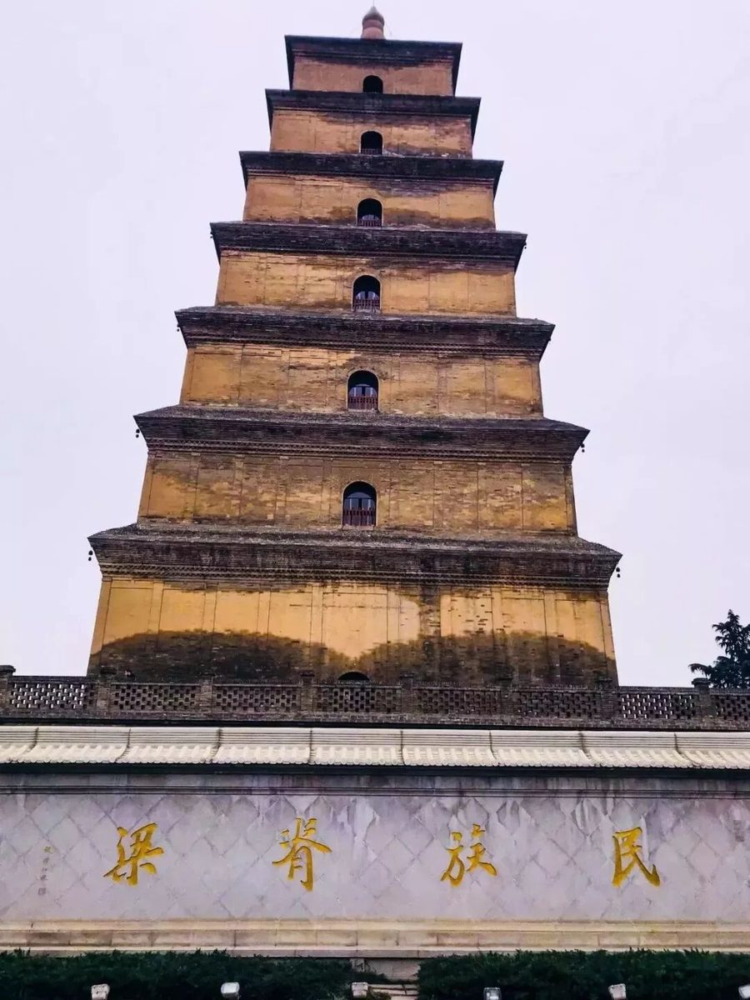
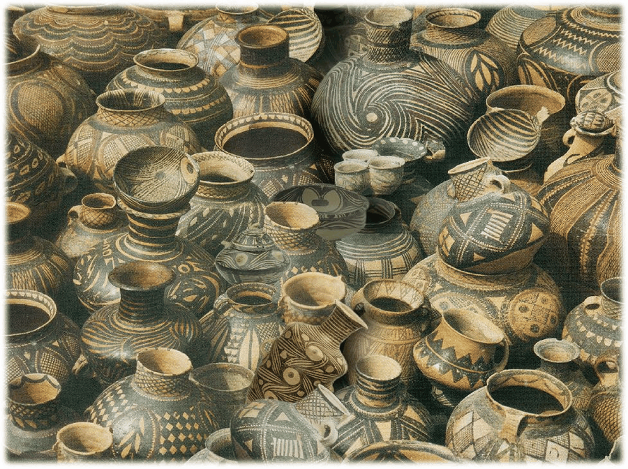

【行者无疆·韶忆长安】七层雁塔 千年彩陶
雄浑古老长安城，风雨沧桑大雁塔

塔势如涌出，孤高耸天宫。
登临出世间，磴道盘虚空。
突兀压神州，峥嵘如鬼工。
四角碍白日，七层摩苍穹。
—《与高适薛据同登慈恩寺浮图》 岑参
大雁塔位于唐长安晋昌坊的大慈恩寺内，又名“慈恩寺塔”。唐永徽三年，玄奘为保存由天竺经丝绸之路带回长安的经卷佛像主持修建了大雁塔。大雁塔作为现存的最早的、规模最大的唐代四方楼阁式砖塔，是佛塔这种古印度佛寺的建筑形式随佛教传入中原地区，并融入华夏文明的典型物证，是凝聚了中国人民智慧结晶的标志性建筑。
立于塔下怀古。悬挂于古塔飞檐上的风铎，如同历史悠悠的回响，那是穿越历史的回响，回荡耳畔；那是经历磨难的回响，撞击心灵。
行于塔中回望。陡峭的楼梯，昏暗的光影，邂逅历史发展 。
站于塔上感叹。南面广场上的音乐喷泉，或轻柔，或激昂，或欢快，或悲壮。


世界彩陶在中国，中国彩陶在甘肃


彩陶精美，花纹亦多珠，或则呈人面，或则呈双鱼，农耕既普及，人群意群居。
——郭沫若


彩陶是火与土孕育的文明，是远古先民智慧的结晶，是人类迈向文明门槛的见证。彩陶的出现，不仅是中国陶瓷历史上灿烂光辉的一页，而且改变了石器时代单一的审美要求，表达了先民复杂的审美感受，同时体现了中国陶瓷深刻的文化之一。
<< 滑动查看下一张图片 >>
下午的历博讲坛上，一张张不同时期的彩陶的照片讲述彩陶的彩陶的发展：具有原始性的大地湾文化、具有地域性的仰韶文化、分布面积比较广的马家窑文化、具有强烈生活气息的四坝文化、简洁疏朗的辛店文化、器形独特的寺洼文化以及具有游牧风采的沙井文化……
历史沉淀、时代变迁，大雁塔的精魂仍存，彩陶的意蕴犹在。
图片丨丛雨晴 王一岚
文字丨张媛媛
责编丨王洁
审核丨邓子孚 潘雯雯
行者无疆实践团
QQ：2758025831

随行者一起认识世界
长按二维码关注